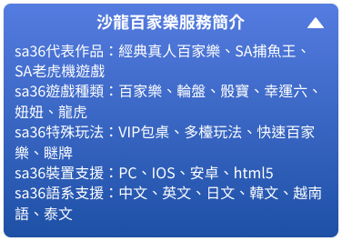
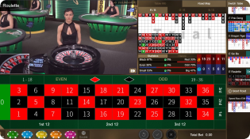
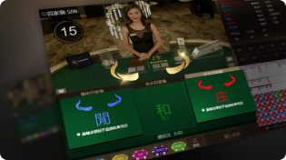
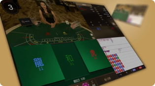

歐博百家樂
沙龍百家樂品牌介紹
沙龍百家樂，亦可稱為sa gaming或者是sa36百家樂。是一款亞洲知名的線上真人視訊遊戲之一，亦是亞洲最具有實力的真人百家樂遊戲系統開發商，由沙龍國際集團操刀設計與經營的產品。沙龍國際集團則成立於2009年，已經成立超過十年的時間，也代表著沙龍百家樂在市場上的規模以及品牌名聲甚至品牌支持度，都有一定的成績。
沙龍百家樂的每款遊戲都是團隊人員精心開發設計與維護的，提供全面性的技術支援服務，是亞洲最受歡迎的真人百家樂品牌遊戲商！沙龍百家樂是獲得多項博弈展覽會認證過的真人視訊遊戲之一，亦是一個現金版的百家樂平台。沙龍百家樂提供不同的遊戲類型選擇，沙龍平台無論是安全性、遊戲公平性都是獲得沙龍官方非常重視的，請完全安心地遊玩。
沙龍百家樂特色介紹
沙龍百家樂創立於西元2009年的菲律賓，每年在亞博會都能奪下年度最佳娛樂城品牌的封號，這亦是業界對於沙龍百家樂品牌的最高度的肯定與支持。沙龍百家樂的辦公室位於菲律賓馬尼拉，遊戲的攝影棚則是位於歐洲地區，因此沙龍百家樂也是一款匯集了東西方國家特色的真人百家樂遊戲。
沙龍百家樂為了給予玩家最真的線上真人體驗，因此攝影棚的規格以及整個沙龍百家樂的營運都是獲得各國政府的司法相關單位所管轄與監控的，沙龍國際集團保證無任何作弊行為或者詐騙行為出現。沙龍百家樂絕對是您在線上博弈選擇上最好的理想選項。
沙龍百家樂遊戲選項玩法介紹
沙龍平台最經典的玩法就是採用八副牌的百家樂玩法，沙龍平台採用業界最流行的「六張牌先發」派發制度在進行遊戲的，玩家可以同時在多達十六張的百家樂牌桌上進行下注，此玩法亦稱為多檯玩法。
沙龍百家樂多年以來都是受到玩家的喜愛，提供最豐富且多元的遊戲選擇給予玩家。沙龍百家樂的荷官穿著都是非常性感火辣的美女群，除了陪伴玩家們歡度遊玩沙龍百家樂的開心時光之外，亦有許多除了百家樂以外的小遊戲可供選擇。
sa36經典百家樂
sa36經典百家樂是整個沙龍平台中最多人玩的遊戲選向，如果您是sa36經典百家樂的愛好者，您就必須懂得百家樂規則以及百家樂看路法兩大基礎學問，才有可能在該遊戲中獲得巨大的成就感。經典百家樂同時也是整個沙龍平台中下注選項最多最複雜的遊戲之一，除了基本的莊閒和局之外，亦有如閒對、莊對、超級六等等特殊的下注選擇，賠率也全都不同。
sa36妞妞
sa36妞妞小遊戲採用一組撲克牌進行遊戲，擇其中一人當莊進行遊戲。沙龍百家樂妞妞中包含莊家一共發放四門牌，由sa36玩家選擇莊閒下注的選擇。sa36妞妞是款非常簡單易懂的小遊戲，玩家僅需將手上的五張手牌分為三張以及兩張組合，查看是否牌型組合點數可湊成時的倍數，最後進行大小的比較。
sa36龍虎
sa36龍虎鬥向周中國傳說故事的龍與虎兩大神獸的鬥爭，sa36龍虎亦是亞洲線上博弈遊戲中獨有的玩法選項，是有別於歐美的特色遊戲之一。sa36龍虎鬥易懂好玩，遊戲無須過多的技巧，僅需一些人品運氣即可進行的遊戲。sa36龍虎鬥遊戲的下注選項也非常簡單明瞭，包含龍、虎以及和局三種選項進行下注。
sa36輪盤
沙龍百家樂的輪盤遊戲有高達50倍的獎金賠率，以中國傳統的「魚蝦蟹」為主題，搭配超性感的荷官進行輪盤的旋轉控制，並且與每位玩家進行線上的互動，讓您有更接近實體賭場的體驗。
沙龍百家樂第三方認證有保障
沙龍百家樂是備有最齊全遊戲的真人視訊娛樂品牌，沙龍國際集團全方位照顧到不同玩家的興趣喜好。沙龍百家樂的產品亦有通過真人娛樂城第三方監管機關的認可，包含GLI的測試與認證。
沙龍百家樂免費試玩在這邊
想玩沙龍百家樂，但又怕沙龍百家樂沒有想到中的完美與有趣？於是害怕註冊之後後悔進入沙龍百家樂的世界。沒有關係！沙龍百家樂官方有提供完全免費的沙龍百家樂免費試玩體驗，針對想入坑沙龍平台，但是卻又如同上述有些擔心的新朋友們可以使用。沙龍百家樂免費試玩操作簡單好懂，讓您在正式成為沙龍平台玩家之前可以想先體驗到沙龍百家樂的趣味性以及穩定性品質！沙龍百家樂有最完善的遊戲平台經營技術以及服務品質，免註冊、免儲值您就能先透過沙龍百家樂免費試玩來一睹沙龍平台的風采。


沙龍百家樂支援多裝置遊玩
沙龍百家樂支援多種上網裝置的支援，採用響應式的網站設計讓網站系統自動偵測玩家的裝置，自動調整成適合玩家裝置的螢幕尺寸。無論橫式或者直式皆能遊玩沙龍百家樂遊戲，且不會因任何作業系統或者裝置廠牌的限制、地點限制就不能線上玩一把。
sa36手機版的設計是無須任何的安裝，輕鬆註冊、輕鬆登入就能輕鬆遊玩沙龍平台，隨時隨地都能享受到沙龍百家樂給您的快樂時光。如無意願下載沙龍百家樂app來進行遊戲，玩家亦可使用瀏覽器的方式由sa36網頁版的地方進行遊戲。
相容多種裝置支援
歐博百家樂相容各種裝置，行動裝置亦可下載歐博app來進行遊玩，歐博集團將官網設計為響應式，會依據玩家所使用的裝置來自動調整比例、顯示大小，讓玩家可以隨意切換自己喜愛的螢幕方向來進行投注，盡情享受歐博遊戲的樂趣。
歐博app與許多線上賭場都有進行串接，博天堂便是其中的一員，在博天堂娛樂城即可玩到最原汁原味的歐博遊戲，若是不想要下載，也可以選擇線上玩的模式，於博天堂官網登入後開啟即可開玩，不分時間地點相當便利！